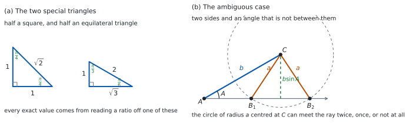

SL 3.5b — Exact values and the ambiguous case of the sine rule（正確な値と、あいまいな場合）
- \(0\)、\(\dfrac{\pi}{6}\)、\(\dfrac{\pi}{4}\)、\(\dfrac{\pi}{3}\)、\(\dfrac{\pi}{2}\) の \(\sin\)・\(\cos\)・\(\tan\) を、正確な値で書ける。
- reference angle（参照角）と象限の符号から、その倍数の角の値を出せる。
- 負の角や \(2\pi\) を超える角を、まず \(0\) 以上 \(2\pi\) 未満に直せる。
- 正弦定理で角を求めるとき、\(2\) つの候補（\(B\) と \(\pi - B\)）を出せる。
- できる三角形が \(2\) つ・\(1\) つ・\(0\) のどれになるかを、理由をつけて言える。
The idea
1. \(2\) つの三角形から出る
\(0\) と \(\dfrac{\pi}{2}\) の値は、単位円の軸の上の点から直接読みます（SL 3.5a）。それ以外の値は、\(2\) つの三角形から読み取るだけです。図 1 の (a) を見てください。
- 正方形を対角線で半分にすると、\(\dfrac{\pi}{4}\)、\(\dfrac{\pi}{4}\)、\(\dfrac{\pi}{2}\) の直角三角形になります。辺の比は \(1 : 1 : \sqrt{2}\) です。
- 正三角形を高さで半分にすると、\(\dfrac{\pi}{6}\)、\(\dfrac{\pi}{3}\)、\(\dfrac{\pi}{2}\) の直角三角形になります。辺の比は \(1 : \sqrt{3} : 2\) です。
どちらも、ピタゴラスの定理で辺の長さを出せます（Why it works）。
2. 正確な値の表
表 1 が、覚えておく値です。
| \(\theta\) | \(0\) | \(\dfrac{\pi}{6}\) | \(\dfrac{\pi}{4}\) | \(\dfrac{\pi}{3}\) | \(\dfrac{\pi}{2}\) |
|---|---|---|---|---|---|
| \(\sin\theta\) | \(0\) | \(\dfrac{1}{2}\) | \(\dfrac{\sqrt{2}}{2}\) | \(\dfrac{\sqrt{3}}{2}\) | \(1\) |
| \(\cos\theta\) | \(1\) | \(\dfrac{\sqrt{3}}{2}\) | \(\dfrac{\sqrt{2}}{2}\) | \(\dfrac{1}{2}\) | \(0\) |
| \(\tan\theta\) | \(0\) | \(\dfrac{\sqrt{3}}{3}\) | \(1\) | \(\sqrt{3}\) | なし |
この表は公式集にはありません。 Paper 1 は電卓なしなので、覚える必要があります。
\(\sin\) の行は \(0, \dfrac{1}{2}, \dfrac{\sqrt{2}}{2}, \dfrac{\sqrt{3}}{2}, 1\) と増えていき、\(\cos\) の行はそれを逆に並べたものです。 この見方だと、\(2\) 行を取りちがえにくくなります。
\(\dfrac{\sqrt{3}}{3}\) は \(\dfrac{1}{\sqrt{3}}\) を有理化した形です。答案ではどちらでもかまいませんが、分母に \(\sqrt{\ }\) を残さない形がふつうです。
3. 参照角を使う
表にあるのは \(0\) から \(\dfrac{\pi}{2}\) までです。その倍数の角は、\(2\) 段階で出します。
- reference angle（参照角）を出す … 終わりの半直線と \(x\) 軸のなす鋭角
- 象限の符号を付ける（SL 3.5a）
参照角は、\(0 \le \theta < 2\pi\) なら次のようになります。
| 象限 | 第 \(1\) | 第 \(2\) | 第 \(3\) | 第 \(4\) |
|---|---|---|---|---|
| 参照角 | \(\theta\) | \(\pi - \theta\) | \(\theta - \pi\) | \(2\pi - \theta\) |
たとえば \(\theta = \dfrac{5\pi}{6}\) は第 \(2\) 象限で、参照角は \(\pi - \dfrac{5\pi}{6} = \dfrac{\pi}{6}\) です。第 \(2\) 象限では \(\sin\) が正、\(\cos\) が負なので
\[ \sin\frac{5\pi}{6} = \frac{1}{2}, \qquad \cos\frac{5\pi}{6} = -\frac{\sqrt{3}}{2} \]
です。大きさは表から、符号は象限から、と覚えてください。
\(\theta\) が \(0\)、\(\dfrac{\pi}{2}\)、\(\pi\)、\(\dfrac{3\pi}{2}\) のように軸の上にあるときは、象限がないので参照角は使いません。単位円の座標をそのまま読みます（SL 3.5a）。
4. 負の角・\(2\pi\) を超える角
まず \(2\pi\) を足すか引くかして、\(0\) 以上 \(2\pi\) 未満に直します（SL 3.5a）。そのあとは 第 3 節と同じです。
たとえば \(\theta = -\dfrac{\pi}{4}\) は、\(2\pi\) を足して \(\dfrac{7\pi}{4}\) です。第 \(4\) 象限で参照角は \(2\pi - \dfrac{7\pi}{4} = \dfrac{\pi}{4}\)、\(\sin\) は負、\(\cos\) は正なので
\[ \sin\left(-\frac{\pi}{4}\right) = -\frac{\sqrt{2}}{2}, \qquad \cos\left(-\frac{\pi}{4}\right) = \frac{\sqrt{2}}{2} \]
です。
表の値はすべて \(0\) 以上です。負になるかどうかは、象限を見ないと決まりません（表 2）。
参照角を出しただけで止めず、最後に符号を付けるところまでを \(1\) 組にしてください。
5. あいまいな場合
正弦定理（SL 3.2）は、辺と、その向かいの角を組にして使います。
\[ \frac{a}{\sin A} = \frac{b}{\sin B} \tag{1}\]
公式集の 3.2 の欄に Sine rule として印刷されています。
\(\dfrac{a}{\sin A} = \dfrac{b}{\sin B} = \dfrac{c}{\sin C}\)
\(2\) 辺と、そのあいだにない角（\(a\)、\(b\)、\(\hat{A}\)）が分かっているときが問題です。式 1 から
\[ \sin B = \frac{b\sin A}{a} \tag{2}\]
が出ますが、\(\sin B\) の値が同じ角は、\(0\) と \(\pi\) のあいだに \(2\) つあります（\(\sin B = 1\) のときだけ、\(\dfrac{\pi}{2}\) の \(1\) つです）。\(\sin(\pi - B) = \sin B\)（SL 3.5a）だからです。これが ambiguous case（あいまいな場合）です。
図で見ると分かりやすくなります。図 1 の (b) では、\(\hat{A}\) の一方の辺に \(\mathrm{AC} = b\) を取り、\(C\) を中心とする半径 \(a\) の円が、\(A\) から出るもう一方の半直線と \(2\) 回交わっています。交点が \(B_{1}\) と \(B_{2}\) の \(2\) とおりあるので、三角形も \(2\) つできます。
\(2\) 辺とそのはさむ角なら、こうはなりません。 三角形が \(1\) つに決まるからです。
6. いくつ三角形ができるか
\(C\) から半直線 \(\mathrm{AB}\) までの距離は \(b\sin A\) です。この長さと \(a\) をくらべると、円が \(2\) 回交わるか、接するか、交わらないかが決まります。\(\hat{A}\) が鋭角のときは、\(\sin B = \dfrac{b\sin A}{a}\) の値と、\(a\) と \(b\) の大小で決まります。
| 条件 | \(\sin B\) | 三角形の数 |
|---|---|---|
| \(a < b\sin A\) | \(1\) より大きい | \(0\) |
| \(a = b\sin A\) | ちょうど \(1\) | \(1\)（\(\hat{B} = \dfrac{\pi}{2}\)） |
| \(b\sin A < a < b\) | \(1\) より小さい | \(2\) |
| \(a \ge b\) | \(1\) より小さい | \(1\) |
\(a \ge b\) のとき候補が \(1\) つに減る理由は、\(\hat{B} \le \hat{A}\) となって \(\hat{B}\) が鈍角になれないので、鈍角のほうの候補が消えるからです。
\(\hat{A}\) が直角か鈍角のときは、\(a > b\) なら \(1\) つ、そうでなければ \(0\) です。 \(\hat{A}\) が最大の角になるので、その向かいの \(a\) が最長でなければなりません。逆に \(a > b\) のときは \(\sin B = \dfrac{b\sin A}{a} < \sin A\) となり、鋭角の候補は \(\pi - \hat{A}\) より小さいので、\(\hat{A} + \hat{B} < \pi\) となって三角形がちょうど \(1\) つできます。
7. 答案の書き方
- \(\sin B\) の値を出したら、いったん止まります。 候補は \(B\) と \(\pi - B\) の \(2\) つです。
- それぞれについて \(\hat{A} + \hat{B} < \pi\) を確かめます。 これをみたさない候補は捨てます。
- 残ったものをすべて書きます。 \(2\) つ残ったら \(2\) つとも書きます。
- 図をかいておくと、捨てた理由が伝わります（SL 3.2）。
TI-Nspire の \(\sin^{-1}\) は、\(-\dfrac{\pi}{2}\) から \(\dfrac{\pi}{2}\) までの値しか返しません。三角形の角は正なので、返ってくるのは鋭角のほうだけです（\(\sin B = 1\) のときだけ \(\dfrac{\pi}{2}\)）。
もう \(1\) つの候補 \(\pi - B\) は、自分で書き足す必要があります。 電卓は「あいまいな場合」を教えてくれません。
Paper 1 では使えません。 このページの例題と演習は、すべて手で解ける形にしてあります。

Why it works
なぜ、あの \(2\) つの三角形から値が出るのでしょうか。 まず正方形です。\(1\) 辺 \(1\) の正方形を対角線で切ると、直角をはさむ \(2\) 辺が \(1\)、\(1\) の直角三角形になります。対角線の長さは
\[ \sqrt{1^{2}+1^{2}} = \sqrt{2} \]
です。残りの \(2\) 角は等しく、和が \(\dfrac{\pi}{2}\) なので、どちらも \(\dfrac{\pi}{4}\) です。
斜辺が \(1\) になるように縮めると、この三角形は単位円の中に入ります。\(\theta\) が鋭角なら、直角三角形の比と単位円の座標は同じ値なので（SL 3.5a）、辺の比がそのまま \(\sin\)・\(\cos\) の値になります。だから
\[ \sin\frac{\pi}{4} = \frac{1}{\sqrt{2}} = \frac{\sqrt{2}}{2} \]
となります。\(\cos\) も同じ値、\(\tan\) は \(1\) です。
正三角形のほうも同じです。 \(1\) 辺 \(2\) の正三角形を、\(1\) つの頂点から高さで切ります。底辺は半分になって \(1\)、斜辺は \(2\) のままです。高さは
\[ \sqrt{2^{2}-1^{2}} = \sqrt{3} \]
です。もとの角 \(\dfrac{\pi}{3}\) は半分になって \(\dfrac{\pi}{6}\) になり、残りの角が \(\dfrac{\pi}{3}\) です。ここから表の \(\dfrac{\pi}{6}\) と \(\dfrac{\pi}{3}\) の列が読めます。
なぜ、候補が \(2\) つ出るのでしょうか。 式 2 で分かるのは \(\sin B\) の値だけです。\(0 < B < \pi\) の範囲で \(\sin B\) が同じ値になる角は、\(B\) と \(\pi - B\) の \(2\) つあります（\(B = \dfrac{\pi}{2}\) のときだけ、この \(2\) つが重なって \(1\) つです）。
角そのものではなく値しか分からない以上、\(2\) つとも候補です。どちらが本当かは、\(\sin\) 以外の条件で決めるしかありません。
その条件が、角の和です。 三角形の \(3\) 角の和は \(\pi\) なので、\(\hat{A} + \hat{B} < \pi\) でなければなりません。これをみたさない候補は、三角形になりません。
\(a \ge b\) のときに候補が \(1\) つになるのは、大きい辺の向かいに大きい角が来るからです。\(a \ge b\) なら \(\hat{A} \ge \hat{B}\) です。もし \(\hat{B}\) が鈍角なら \(\hat{A}\) も鈍角になり、\(2\) つの鈍角の和が \(\pi\) を超えてしまいます。だから \(\hat{B}\) は鋭角しかありえません。
Worked examples
問題文は英語です。意味が理解できなかったら、問題文の下の「日本語訳」を開いてください。解説は日本語です。
例題も演習も、すべて電卓なしで解けます。 Paper 1 のつもりで解いてください。
例題 1 (a) Find the exact value of \(\sin\dfrac{2\pi}{3}\).
(b) Find the exact value of \(\cos\dfrac{5\pi}{4}\).
(c) Find the exact value of \(\tan\dfrac{11\pi}{6}\).
(d) Explain why \(\cos\dfrac{5\pi}{3} = \cos\dfrac{\pi}{3}\).
日本語訳
(a) \(\sin\dfrac{2\pi}{3}\) の正確な値を求めなさい。
(b) \(\cos\dfrac{5\pi}{4}\) の正確な値を求めなさい。
(c) \(\tan\dfrac{11\pi}{6}\) の正確な値を求めなさい。
(d) \(\cos\dfrac{5\pi}{3} = \cos\dfrac{\pi}{3}\) になる理由を説明しなさい。
(a) \(\dfrac{2\pi}{3}\) は第 \(2\) 象限です。参照角は \(\pi - \dfrac{2\pi}{3} = \dfrac{\pi}{3}\) で、第 \(2\) 象限の \(\sin\) は正です。
\[ \sin\frac{2\pi}{3} = \sin\frac{\pi}{3} = \frac{\sqrt{3}}{2} \]
(b) \(\dfrac{5\pi}{4}\) は第 \(3\) 象限です。参照角は \(\dfrac{5\pi}{4} - \pi = \dfrac{\pi}{4}\) で、第 \(3\) 象限の \(\cos\) は負です。
\[ \cos\frac{5\pi}{4} = -\cos\frac{\pi}{4} = -\frac{\sqrt{2}}{2} \]
(c) \(\dfrac{11\pi}{6}\) は第 \(4\) 象限です。参照角は \(2\pi - \dfrac{11\pi}{6} = \dfrac{\pi}{6}\) で、第 \(4\) 象限の \(\tan\) は負です。
\[ \tan\frac{11\pi}{6} = -\tan\frac{\pi}{6} = -\frac{\sqrt{3}}{3} \]
(d) Explain why なので、英語で理由を書きます。
試験ではこう書く
Subtracting a full turn, \(\dfrac{5\pi}{3} - 2\pi = -\dfrac{\pi}{3}\), and cosine is unchanged by a full turn, so \(\cos\dfrac{5\pi}{3} = \cos\left(-\dfrac{\pi}{3}\right)\). Reflecting in the \(x\)-axis sends the point at angle \(\dfrac{\pi}{3}\) to the point at angle \(-\dfrac{\pi}{3}\) and leaves the \(x\)-coordinate unchanged, so \(\cos\left(-\dfrac{\pi}{3}\right) = \cos\dfrac{\pi}{3}\).
（\(1\) 周ぶん引くと \(\dfrac{5\pi}{3} - 2\pi = -\dfrac{\pi}{3}\) で、\(1\) 周では \(\cos\) は変わらないから \(\cos\dfrac{5\pi}{3} = \cos\left(-\dfrac{\pi}{3}\right)\) である。\(x\) 軸で折り返すと角 \(\dfrac{\pi}{3}\) の点は角 \(-\dfrac{\pi}{3}\) の点に写り、\(x\) 座標は変わらないので \(\cos\left(-\dfrac{\pi}{3}\right) = \cos\dfrac{\pi}{3}\) である、という意味です。）
検算（(a) について）。 \(\dfrac{\pi}{2}\) とくらべます。 \(\dfrac{2\pi}{3}\) は \(\dfrac{\pi}{2}\) より少し大きいので、\(\sin\) は \(1\) より少し小さいはずです。\(\dfrac{\sqrt{3}}{2} \approx 0.87\) ✓ 符号も正で合っています。
検算（(b) について）。 \(\sin\) も出して、\(2\) 乗の和を見ます。 点は単位円 \(x^{2}+y^{2}=1\) の上にあるはずです（SL 3.5a）。同じ参照角なので \(\sin\dfrac{5\pi}{4} = -\dfrac{\sqrt{2}}{2}\) です。\(\left(-\dfrac{\sqrt{2}}{2}\right)^{2}+\left(-\dfrac{\sqrt{2}}{2}\right)^{2} = \dfrac{1}{2}+\dfrac{1}{2} = 1\) ✓ 単位円の上の点になっています。
検算（(c) について）。 \(\dfrac{\sin}{\cos}\) で出し直します。 \(\sin\dfrac{11\pi}{6} = -\dfrac{1}{2}\)、\(\cos\dfrac{11\pi}{6} = \dfrac{\sqrt{3}}{2}\) なので、比は \(\dfrac{-1/2}{\sqrt{3}/2} = -\dfrac{1}{\sqrt{3}} = -\dfrac{\sqrt{3}}{3}\) ✓
(a) reference angle \(\dfrac{\pi}{3}\), second quadrant \[\sin\frac{2\pi}{3} = \frac{\sqrt{3}}{2}\]
(b) reference angle \(\dfrac{\pi}{4}\), third quadrant \[\cos\frac{5\pi}{4} = -\frac{\sqrt{2}}{2}\]
(c) reference angle \(\dfrac{\pi}{6}\), fourth quadrant \[\tan\frac{11\pi}{6} = -\frac{\sqrt{3}}{3}\]
(d) \(\dfrac{5\pi}{3} = -\dfrac{\pi}{3} + 2\pi\), and \(\cos(-\theta) = \cos\theta\), so both equal \(\cos\dfrac{\pi}{3}\).
例題 2 The angle \(\theta = \dfrac{7\pi}{6}\).
(a) Write down the quadrant containing \(\theta\), and write down the reference angle.
(b) Find the exact values of \(\sin\theta\) and \(\cos\theta\).
(c) Hence find the exact value of \(\tan\theta\).
(d) Explain why \(\tan\theta\) is positive for this angle.
日本語訳
角 \(\theta = \dfrac{7\pi}{6}\) とします。
(a) \(\theta\) をふくむ象限と、参照角を書きなさい。
(b) \(\sin\theta\) と \(\cos\theta\) の正確な値を求めなさい。
(c) これらから \(\tan\theta\) の正確な値を求めなさい。
(d) この角で \(\tan\theta\) が正になる理由を説明しなさい。
(a) \(\pi < \dfrac{7\pi}{6} < \dfrac{3\pi}{2}\) なので第 \(3\) 象限です。参照角は
\[ \frac{7\pi}{6} - \pi = \frac{\pi}{6} \]
(b) 第 \(3\) 象限では \(\sin\) も \(\cos\) も負です。
\[ \sin\frac{7\pi}{6} = -\frac{1}{2}, \qquad \cos\frac{7\pi}{6} = -\frac{\sqrt{3}}{2} \]
(c) 比を取ります。
\[ \tan\frac{7\pi}{6} = \frac{-\frac{1}{2}}{-\frac{\sqrt{3}}{2}} = \frac{1}{\sqrt{3}} = \frac{\sqrt{3}}{3} \]
(d) Explain why なので、英語で理由を書きます。
試験ではこう書く
The angle \(\dfrac{7\pi}{6}\) lies in the third quadrant, where the point on the unit circle has a negative \(x\)-coordinate and a negative \(y\)-coordinate. So \(\sin\theta < 0\) and \(\cos\theta < 0\). Since \(\tan\theta = \dfrac{\sin\theta}{\cos\theta}\) is a quotient of two negative numbers, it is positive.
（角 \(\dfrac{7\pi}{6}\) は第 \(3\) 象限にあり、そこでは単位円上の点の \(x\) 座標も \(y\) 座標も負である。よって \(\sin\theta < 0\)、\(\cos\theta < 0\) である。\(\tan\theta = \dfrac{\sin\theta}{\cos\theta}\) は負を負で割った商なので、正になる、という意味です。）
検算（(a) について）。 度に直して見ます。 \(\dfrac{7\pi}{6} = 210°\) で、\(180°\) と \(270°\) のあいだですから第 \(3\) 象限です ✓ 参照角も \(210° - 180° = 30°\) で合っています。
検算（(b) について）。 \(2\) 乗の和を見ます。 点は単位円 \(x^{2}+y^{2}=1\) の上にあるはずです（SL 3.5a）。\(\left(-\dfrac{1}{2}\right)^{2}+\left(-\dfrac{\sqrt{3}}{2}\right)^{2} = \dfrac{1}{4}+\dfrac{3}{4} = 1\) ✓ ただし、この確かめでは符号までは分かりません。
検算（(c) について）。 \(\pi\) を足す関係で見ます。 \(\dfrac{7\pi}{6} = \dfrac{\pi}{6} + \pi\) なので、\(\tan\dfrac{7\pi}{6} = \tan\dfrac{\pi}{6}\) のはずです（SL 3.5a）。表の \(\tan\dfrac{\pi}{6} = \dfrac{\sqrt{3}}{3}\) と一致します ✓
(a) third quadrant, reference angle \[\frac{7\pi}{6} - \pi = \frac{\pi}{6}\]
(b) \[\sin\frac{7\pi}{6} = -\frac{1}{2}, \qquad \cos\frac{7\pi}{6} = -\frac{\sqrt{3}}{2}\]
(c) \[\tan\frac{7\pi}{6} = \frac{\sqrt{3}}{3}\]
(d) In the third quadrant both coordinates are negative, so \(\tan\theta\) is a quotient of two negatives and is positive.
例題 3 In triangle \(\mathrm{ABC}\), the side \(a\) is opposite \(\hat{\mathrm{A}}\) and the side \(b\) is opposite \(\hat{\mathrm{B}}\). It is given that \(a = 4\), \(b = 4\sqrt{2}\) and \(\hat{\mathrm{A}} = \dfrac{\pi}{6}\).
(a) Show that \(\sin\hat{\mathrm{B}} = \dfrac{\sqrt{2}}{2}\).
(b) Find the two possible values of \(\hat{\mathrm{B}}\).
(c) Find the value of \(\hat{\mathrm{C}}\) in each case.
(d) Explain why both values of \(\hat{\mathrm{B}}\) give a triangle.
日本語訳
三角形 \(\mathrm{ABC}\) で、辺 \(a\) は \(\hat{\mathrm{A}}\) の向かい、辺 \(b\) は \(\hat{\mathrm{B}}\) の向かいです。\(a = 4\)、\(b = 4\sqrt{2}\)、\(\hat{\mathrm{A}} = \dfrac{\pi}{6}\) とします。
(a) \(\sin\hat{\mathrm{B}} = \dfrac{\sqrt{2}}{2}\) であることを示しなさい。
(b) \(\hat{\mathrm{B}}\) として考えられる \(2\) つの値を求めなさい。
(c) それぞれの場合の \(\hat{\mathrm{C}}\) を求めなさい。
(d) \(\hat{\mathrm{B}}\) の \(2\) つの値がどちらも三角形になる理由を説明しなさい。
(a) Show that なので、過程を書きます。 式 2 に入れます。
\[ \sin\hat{\mathrm{B}} = \frac{b\sin A}{a} = \frac{4\sqrt{2} \times \frac{1}{2}}{4} = \frac{2\sqrt{2}}{4} = \frac{\sqrt{2}}{2} \]
(b) \(\sin\) が \(\dfrac{\sqrt{2}}{2}\) になる角は、\(0\) と \(\pi\) のあいだに \(2\) つあります（第 5 節）。
\[ \hat{\mathrm{B}} = \frac{\pi}{4} \quad \text{または} \quad \hat{\mathrm{B}} = \pi - \frac{\pi}{4} = \frac{3\pi}{4} \]
(c) 角の和が \(\pi\) です。
\[ \hat{\mathrm{C}} = \pi - \frac{\pi}{6} - \frac{\pi}{4} = \frac{7\pi}{12} \quad \text{または} \quad \hat{\mathrm{C}} = \pi - \frac{\pi}{6} - \frac{3\pi}{4} = \frac{\pi}{12} \]
(d) Explain why なので、英語で理由を書きます。
試験ではこう書く
A value of \(\hat{\mathrm{B}}\) gives a triangle exactly when \(\hat{\mathrm{A}} + \hat{\mathrm{B}} < \pi\), so that the remaining angle is positive. Here \(\dfrac{\pi}{6} + \dfrac{\pi}{4} = \dfrac{5\pi}{12} < \pi\) and \(\dfrac{\pi}{6} + \dfrac{3\pi}{4} = \dfrac{11\pi}{12} < \pi\). Both leave a positive third angle, so both values give a triangle.
（\(\hat{\mathrm{B}}\) が三角形になるのは、\(\hat{\mathrm{A}} + \hat{\mathrm{B}} < \pi\) で、残りの角が正になるときちょうどである。ここでは \(\dfrac{\pi}{6} + \dfrac{\pi}{4} = \dfrac{5\pi}{12} < \pi\)、\(\dfrac{\pi}{6} + \dfrac{3\pi}{4} = \dfrac{11\pi}{12} < \pi\) である。どちらも第 \(3\) の角が正になるので、\(2\) つとも三角形になる、という意味です。）
検算（(a) について）。 正弦定理に戻します。 \(\dfrac{a}{\sin A} = \dfrac{4}{1/2} = 8\)、\(\dfrac{b}{\sin B} = \dfrac{4\sqrt{2}}{\sqrt{2}/2} = 8\) ✓ 両辺が同じ値になりました。
検算（(b) について）。 大小で見ます。 \(b = 4\sqrt{2} > a = 4\) なので、\(\hat{\mathrm{B}} > \hat{\mathrm{A}} = \dfrac{\pi}{6}\) でなければなりません。\(\dfrac{\pi}{4}\) も \(\dfrac{3\pi}{4}\) も \(\dfrac{\pi}{6}\) より大きい ✓ また 表 3 で \(b\sin A = 2\sqrt{2} \approx 2.83 < 4 < 4\sqrt{2}\) なので、三角形は \(2\) つです。
検算（(c) について）。 足して \(\pi\) になるか見ます。 \(\dfrac{\pi}{6}+\dfrac{\pi}{4}+\dfrac{7\pi}{12} = \dfrac{2\pi+3\pi+7\pi}{12} = \pi\) ✓ もう一方も \(\dfrac{2\pi+9\pi+\pi}{12} = \pi\) ✓
(a) \(\sin\hat{\mathrm{B}} = \dfrac{4\sqrt{2}\sin\frac{\pi}{6}}{4}\) \[\sin\hat{\mathrm{B}} = \frac{\sqrt{2}}{2}\]
(b) \[\hat{\mathrm{B}} = \frac{\pi}{4} \ \text{ or } \ \hat{\mathrm{B}} = \frac{3\pi}{4}\]
(c) \[\hat{\mathrm{C}} = \frac{7\pi}{12} \ \text{ or } \ \hat{\mathrm{C}} = \frac{\pi}{12}\]
(d) Both give \(\hat{\mathrm{A}} + \hat{\mathrm{B}} < \pi\), so the third angle is positive in each case.
例題 4 In triangle \(\mathrm{ABC}\), \(\hat{\mathrm{A}} = \dfrac{\pi}{6}\) and \(b = 8\), where \(b\) is the side opposite \(\hat{\mathrm{B}}\) and \(a\) is the side opposite \(\hat{\mathrm{A}}\).
(a) Given that \(a = 4\), show that there is exactly one possible triangle, and find \(\hat{\mathrm{B}}\).
(b) Given instead that \(a = 3\), show that no triangle is possible.
(c) Given instead that \(a = 10\), find the number of possible triangles, justifying your answer.
(d) Explain why there is never more than one possible triangle when \(\hat{\mathrm{A}}\) is obtuse.
日本語訳
三角形 \(\mathrm{ABC}\) で \(\hat{\mathrm{A}} = \dfrac{\pi}{6}\)、\(b = 8\) です。\(b\) は \(\hat{\mathrm{B}}\) の向かい、\(a\) は \(\hat{\mathrm{A}}\) の向かいの辺です。
(a) \(a = 4\) のとき、三角形はちょうど \(1\) つであることを示し、\(\hat{\mathrm{B}}\) を求めなさい。
(b) 代わりに \(a = 3\) のとき、三角形ができないことを示しなさい。
(c) 代わりに \(a = 10\) のとき、考えられる三角形の数を、理由をつけて求めなさい。
(d) \(\hat{\mathrm{A}}\) が鈍角のとき、三角形が \(2\) つ以上にならない理由を説明しなさい。
(a) Show that なので、過程を書きます。
\[ \sin\hat{\mathrm{B}} = \frac{8 \times \frac{1}{2}}{4} = 1 \]
\(\sin\hat{\mathrm{B}} = 1\) となる角は \(0\) と \(\pi\) のあいだに \(\dfrac{\pi}{2}\) だけです。\(\hat{\mathrm{A}} + \hat{\mathrm{B}} = \dfrac{\pi}{6}+\dfrac{\pi}{2} = \dfrac{2\pi}{3} < \pi\) なので、この候補は三角形になります。候補が \(1\) つなので、三角形も \(1\) つです。
\[ \hat{\mathrm{B}} = \frac{\pi}{2} \]
(b) 同じように計算します。
\[ \sin\hat{\mathrm{B}} = \frac{8 \times \frac{1}{2}}{3} = \frac{4}{3} \]
\(\sin\) の値は \(1\) 以下でなければなりません（SL 3.5a）。\(\dfrac{4}{3} > 1\) なので、そのような角はなく、三角形はできません。
(c) justifying your answer なので、英語で理由を書きます。
\[ \sin\hat{\mathrm{B}} = \frac{8 \times \frac{1}{2}}{10} = \frac{2}{5} \]
試験ではこう書く
Here \(a = 10 > 8 = b\), so \(\hat{\mathrm{A}} > \hat{\mathrm{B}}\) because the larger side faces the larger angle. Since \(\hat{\mathrm{A}} = \dfrac{\pi}{6}\), this forces \(\hat{\mathrm{B}} < \dfrac{\pi}{6}\), so the obtuse candidate \(\pi - \hat{\mathrm{B}}\) is rejected. The acute candidate does give a triangle, since \(\hat{\mathrm{A}} + \hat{\mathrm{B}} < \dfrac{\pi}{3} < \pi\). So there is exactly one possible triangle.
（ここでは \(a = 10 > 8 = b\) なので、大きい辺の向かいに大きい角が来ることから \(\hat{\mathrm{A}} > \hat{\mathrm{B}}\) である。\(\hat{\mathrm{A}} = \dfrac{\pi}{6}\) だから \(\hat{\mathrm{B}} < \dfrac{\pi}{6}\) となり、鈍角のほうの候補は捨てられる。よって三角形はちょうど \(1\) つである、という意味です。）
(d) Explain why なので、英語で理由を書きます。
試験ではこう書く
A triangle has at most one angle that is not acute, because two angles of at least \(\dfrac{\pi}{2}\) would already sum to at least \(\pi\). If \(\hat{\mathrm{A}}\) is obtuse, then \(\hat{\mathrm{B}}\) must be acute, so of the two candidates \(\hat{\mathrm{B}}\) and \(\pi - \hat{\mathrm{B}}\) only the acute one can be used. Hence there is at most one triangle.
（三角形で鋭角でない角は多くても \(1\) つである。\(\dfrac{\pi}{2}\) 以上の角が \(2\) つあれば、和がすでに \(\pi\) 以上になってしまうからである。\(\hat{\mathrm{A}}\) が鈍角なら \(\hat{\mathrm{B}}\) は鋭角でなければならず、\(2\) つの候補 \(\hat{\mathrm{B}}\) と \(\pi - \hat{\mathrm{B}}\) のうち鋭角のほうしか使えない。よって三角形は多くても \(1\) つである、という意味です。）
検算（(a) について）。 余弦定理でも見ます（SL 3.2）。\(16 = 64 + c^{2} - 8\sqrt{3}\,c\) から \(c^{2} - 8\sqrt{3}\,c + 48 = 0\) です。判別式は \(192 - 192 = 0\) なので \(c\) はただ \(1\) つ（\(c = 4\sqrt{3}\)）で、三角形も \(1\) つ ✓ 正弦定理を通らない道すじでも同じです。
検算（(b) について）。 余弦定理でも見ます。 \(9 = 64 + c^{2} - 8\sqrt{3}\,c\) から \(c^{2} - 8\sqrt{3}\,c + 55 = 0\) です。判別式は \(192 - 220 = -28 < 0\) なので、実数の \(c\) がありません ✓ 三角形はできません。
検算（(c) について）。 角の和でも確かめます。 \(\sin\hat{\mathrm{B}} = \dfrac{2}{5} < \dfrac{1}{2} = \sin\dfrac{\pi}{6}\) です。\(0\) から \(\dfrac{\pi}{2}\) では \(\sin\) が増えるので、鋭角の候補は \(\dfrac{\pi}{6}\) より小さくなります。すると鈍角の候補はその補角で、\(\pi - \dfrac{\pi}{6} = \dfrac{5\pi}{6}\) より大きくなります。\(\hat{\mathrm{A}} = \dfrac{\pi}{6}\) を足すと \(\pi\) を超えるので、鈍角の候補は捨てられます ✓ 表 3 の \(4\) 行目（\(a \ge b\)）とも合っています。
(a) \(\sin\hat{\mathrm{B}} = \dfrac{8\sin\frac{\pi}{6}}{4} = 1\), and only one angle in \(0 < B < \pi\) has sine \(1\); also \(\hat{\mathrm{A}} + \hat{\mathrm{B}} = \dfrac{2\pi}{3} < \pi\) \[\hat{\mathrm{B}} = \frac{\pi}{2}\]
(b) \(\sin\hat{\mathrm{B}} = \dfrac{8\sin\frac{\pi}{6}}{3} = \dfrac{4}{3} > 1\) \[\text{no triangle}\]
(c) \(a > b\) so \(\hat{\mathrm{B}} < \hat{\mathrm{A}} = \dfrac{\pi}{6}\): the obtuse candidate is rejected, and the acute one gives \(\hat{\mathrm{A}} + \hat{\mathrm{B}} < \dfrac{\pi}{3} < \pi\). \[\text{one triangle}\]
(d) A triangle has at most one non-acute angle, so \(\hat{\mathrm{B}}\) must be acute and only one candidate survives.
Common errors
候補は \(B\) と \(\pi - B\) の \(2\) つです（第 5 節）。電卓も、\(1\) つ（ふつうは鋭角のほう）しか返しません。
\(\hat{A} + \hat{B} < \pi\) をみたさない候補は捨てます（第 7 節）。\(2\) つ書けばよい、というものではありません。
\(\cos\) の行は \(\sin\) の行を逆に並べたものです（第 2 節）。\(\cos 0 = 1\) から始まる、と覚えると入れかわりません。
\(\dfrac{\pi}{6}\) と \(30°\) は同じ角ですが、\(1\) つの答案の中では単位をそろえます（SL 3.4）。
\(\sin\) の値は \(-1\) 以上 \(1\) 以下です。\(1\) を超えたら、そこで「三角形はできない」と書きます。
参照角は \(0\) と \(\dfrac{\pi}{2}\) のあいだの角です。聞かれているのがもとの角なら、象限にもどしてから答えます。
Exercises
各問題に、折りたたみが \(3\) つ付いています。日本語訳、解答例（答案用紙に書くべきこと。英語です）、解説（なぜそうなるか。日本語です）。
まず自分で解いて、次に解答例と見くらべてください。解説は、合わなかったときだけ開けば十分です。
1 Write down the exact value of \(\cos\dfrac{\pi}{3}\), and hence find the exact value of \(\cos\dfrac{2\pi}{3}\).
日本語訳
\(\cos\dfrac{\pi}{3}\) の正確な値を書き、それをもとに \(\cos\dfrac{2\pi}{3}\) の正確な値を求めなさい。
\[\cos\frac{\pi}{3} = \frac{1}{2}\]
reference angle \(\dfrac{\pi}{3}\), second quadrant
\[\cos\frac{2\pi}{3} = -\frac{1}{2}\]
参照角は \(\pi - \dfrac{2\pi}{3} = \dfrac{\pi}{3}\)、第 \(2\) 象限なので \(\cos\) は負です（表 2）。
検算。 \(\dfrac{\pi}{2}\) とくらべます。 \(\dfrac{2\pi}{3}\) は \(\dfrac{\pi}{2}\) より大きいので、\(\cos\) は負でなければなりません ✓ 大きさは \(\cos\dfrac{\pi}{3} = \dfrac{1}{2}\) と同じです。
符号を落とさないでください。 \(\dfrac{1}{2}\) は第 \(1\) 象限の値です。
2 Find the exact value of \(\tan\dfrac{5\pi}{4}\).
日本語訳
\(\tan\dfrac{5\pi}{4}\) の正確な値を求めなさい。
reference angle \(\dfrac{\pi}{4}\), third quadrant
\[\tan\frac{5\pi}{4} = 1\]
第 \(3\) 象限では \(\tan\) が正です（SL 3.5a）。大きさは \(\tan\dfrac{\pi}{4} = 1\) です。
検算。 \(\pi\) を足す関係で見ます。 \(\dfrac{5\pi}{4} = \dfrac{\pi}{4} + \pi\) なので \(\tan\dfrac{5\pi}{4} = \tan\dfrac{\pi}{4} = 1\) ✓
\(-1\) としないでください。 \(\tan\) が負になるのは第 \(2\) と第 \(4\) 象限です。
3 Find the exact value of \(\sin\dfrac{4\pi}{3}\).
日本語訳
\(\sin\dfrac{4\pi}{3}\) の正確な値を求めなさい。
reference angle \(\dfrac{\pi}{3}\), third quadrant
\[\sin\frac{4\pi}{3} = -\frac{\sqrt{3}}{2}\]
参照角は \(\dfrac{4\pi}{3} - \pi = \dfrac{\pi}{3}\)、第 \(3\) 象限なので \(\sin\) は負です。
検算。 \(\cos\) も出して \(2\) 乗の和を見ます。 点は単位円 \(x^{2}+y^{2}=1\) の上にあるはずです（SL 3.5a）。\(\cos\dfrac{4\pi}{3} = -\dfrac{1}{2}\) なので \(\dfrac{3}{4}+\dfrac{1}{4} = 1\) ✓ 符号までは確かめられないので、象限も見てください。
\(\dfrac{\sqrt{3}}{2}\) としないでください。 第 \(3\) 象限では \(y\) 座標が負です。
4 Find the exact value of \(\cos\left(-\dfrac{\pi}{6}\right)\).
日本語訳
\(\cos\left(-\dfrac{\pi}{6}\right)\) の正確な値を求めなさい。
\[\cos\left(-\frac{\pi}{6}\right) = \cos\frac{\pi}{6} = \frac{\sqrt{3}}{2}\]
\(x\) 軸で折り返しても \(x\) 座標は変わらないので、\(\cos(-\theta) = \cos\theta\) です（SL 3.5a）。
検算。 \(2\pi\) を足してから参照角で出します。 \(-\dfrac{\pi}{6} + 2\pi = \dfrac{11\pi}{6}\) は第 \(4\) 象限で、参照角は \(\dfrac{\pi}{6}\)、\(\cos\) は正です。\(\dfrac{\sqrt{3}}{2}\) ✓
\(\sin\) と混ぜないでください。 \(\sin\left(-\dfrac{\pi}{6}\right)\) なら符号が変わります。
5 Find the exact value of \(\sin\dfrac{13\pi}{6}\).
日本語訳
\(\sin\dfrac{13\pi}{6}\) の正確な値を求めなさい。
\(\dfrac{13\pi}{6} - 2\pi = \dfrac{\pi}{6}\)
\[\sin\frac{13\pi}{6} = \frac{1}{2}\]
まず \(2\pi\) を引いて \(0\) 以上 \(2\pi\) 未満に直します（第 4 節）。\(\dfrac{\pi}{6}\) は第 \(1\) 象限なので、そのまま表の値です。
検算。 範囲をしぼって見ます。 \(\dfrac{13\pi}{6} - 2\pi = \dfrac{\pi}{6}\) は \(\dfrac{\pi}{4}\) より小さいので、\(\sin\) は正で、\(\sin\dfrac{\pi}{4} = \dfrac{\sqrt{2}}{2} \approx 0.71\) より小さいはずです。\(\dfrac{1}{2}\) はその範囲に入っています ✓
\(\dfrac{13\pi}{6}\) を第 \(4\) 象限としないでください。 \(2\pi\) を超えています。
6 In triangle \(\mathrm{ABC}\), \(a = 5\), \(b = 5\sqrt{3}\) and \(\hat{\mathrm{A}} = \dfrac{\pi}{6}\), where \(a\) is opposite \(\hat{\mathrm{A}}\) and \(b\) is opposite \(\hat{\mathrm{B}}\). Show that there are two possible triangles, and find both values of \(\hat{\mathrm{B}}\).
日本語訳
三角形 \(\mathrm{ABC}\) で \(a = 5\)、\(b = 5\sqrt{3}\)、\(\hat{\mathrm{A}} = \dfrac{\pi}{6}\) です（\(a\) は \(\hat{\mathrm{A}}\) の向かい、\(b\) は \(\hat{\mathrm{B}}\) の向かい）。三角形が \(2\) つできることを示し、\(\hat{\mathrm{B}}\) の値を両方とも求めなさい。
\[\sin\hat{\mathrm{B}} = \frac{5\sqrt{3} \times \frac{1}{2}}{5} = \frac{\sqrt{3}}{2}\]
\[\hat{\mathrm{B}} = \frac{\pi}{3} \ \text{ or } \ \hat{\mathrm{B}} = \frac{2\pi}{3}\]
Both give \(\hat{\mathrm{A}} + \hat{\mathrm{B}} < \pi\), so there are two triangles.
式 2 に入れてから、\(2\) つの候補を出します。\(\dfrac{\pi}{6}+\dfrac{\pi}{3} = \dfrac{\pi}{2}\)、\(\dfrac{\pi}{6}+\dfrac{2\pi}{3} = \dfrac{5\pi}{6}\) で、どちらも \(\pi\) より小さいので、どちらも三角形になります。
検算。 余弦定理でも見ます（SL 3.2）。\(25 = 75 + c^{2} - 15c\) から \(c^{2} - 15c + 50 = 0\)、つまり \((c-5)(c-10) = 0\) です。\(c = 5\) と \(c = 10\) の \(2\) つとも正なので、三角形は \(2\) つ ✓ 正弦定理を通らない道すじでも \(2\) つです。
片方だけで終わらせないでください。 「\(2\) つある」ことを示す問題です。
7 In triangle \(\mathrm{ABC}\), \(a = 4\), \(b = 9\) and \(\hat{\mathrm{A}} = \dfrac{\pi}{6}\), where \(a\) is opposite \(\hat{\mathrm{A}}\) and \(b\) is opposite \(\hat{\mathrm{B}}\). Show that no such triangle exists.
日本語訳
三角形 \(\mathrm{ABC}\) で \(a = 4\)、\(b = 9\)、\(\hat{\mathrm{A}} = \dfrac{\pi}{6}\) です（\(a\) は \(\hat{\mathrm{A}}\) の向かい、\(b\) は \(\hat{\mathrm{B}}\) の向かい）。そのような三角形が存在しないことを示しなさい。
\[\sin\hat{\mathrm{B}} = \frac{9 \times \frac{1}{2}}{4} = \frac{9}{8}\]
\(\dfrac{9}{8} > 1\), and \(\sin\hat{\mathrm{B}} \le 1\) for every angle, so no such triangle exists.
8 In triangle \(\mathrm{ABC}\), \(a = b = 5\) and \(\hat{\mathrm{A}} = \dfrac{\pi}{4}\), where \(a\) is opposite \(\hat{\mathrm{A}}\) and \(b\) is opposite \(\hat{\mathrm{B}}\). Explain why the obtuse candidate for \(\hat{\mathrm{B}}\) gives no triangle.
日本語訳
三角形 \(\mathrm{ABC}\) で \(a = b = 5\)、\(\hat{\mathrm{A}} = \dfrac{\pi}{4}\) です（\(a\) は \(\hat{\mathrm{A}}\) の向かい、\(b\) は \(\hat{\mathrm{B}}\) の向かい）。\(\hat{\mathrm{B}}\) の鈍角のほうの候補が三角形にならない理由を説明しなさい。
\(\sin\hat{\mathrm{B}} = \dfrac{\sqrt{2}}{2}\), so the obtuse candidate is \(\dfrac{3\pi}{4}\). Then \(\hat{\mathrm{A}} + \hat{\mathrm{B}} = \pi\) exactly, leaving \(\hat{\mathrm{C}} = 0\), which is not a triangle.
Explain why なので、角の和で書きます（第 7 節）。\(a = b\) なので \(\hat{\mathrm{A}} = \hat{\mathrm{B}}\) のはずだ、という言い方でもかまいませんが、和がちょうど \(\pi\) になることを見せるほうがはっきりします。
検算。 表でも見ます。 \(a = 5 \ge b = 5\) なので 表 3 の \(4\) 行目にあたり、三角形は \(1\) つです ✓ 残るのは鋭角の候補 \(\dfrac{\pi}{4}\) のほうで、これは \(a = b\) の二等辺三角形になります。
試験ではこう書く
From the sine rule \(\sin\hat{\mathrm{B}} = \dfrac{5\sin\frac{\pi}{4}}{5} = \dfrac{\sqrt{2}}{2}\), so the two candidates are \(\dfrac{\pi}{4}\) and \(\dfrac{3\pi}{4}\). For the obtuse one, \(\hat{\mathrm{A}} + \hat{\mathrm{B}} = \dfrac{\pi}{4} + \dfrac{3\pi}{4} = \pi\), so the third angle would be \(\hat{\mathrm{C}} = 0\). A triangle needs three positive angles, so this candidate gives no triangle.
9 In triangle \(\mathrm{ABC}\), \(a = 7\), \(b = 5\) and \(\hat{\mathrm{A}} = \dfrac{2\pi}{3}\), where \(a\) is opposite \(\hat{\mathrm{A}}\) and \(b\) is opposite \(\hat{\mathrm{B}}\). Find the number of possible triangles, justifying your answer.
日本語訳
三角形 \(\mathrm{ABC}\) で \(a = 7\)、\(b = 5\)、\(\hat{\mathrm{A}} = \dfrac{2\pi}{3}\) です（\(a\) は \(\hat{\mathrm{A}}\) の向かい、\(b\) は \(\hat{\mathrm{B}}\) の向かい）。考えられる三角形の数を、理由をつけて求めなさい。
\[\sin\hat{\mathrm{B}} = \frac{5 \times \frac{\sqrt{3}}{2}}{7} = \frac{5\sqrt{3}}{14}\]
\(\hat{\mathrm{A}}\) is obtuse, so \(\hat{\mathrm{B}}\) must be acute and the obtuse candidate is rejected.
\[\text{one triangle}\]
justifying your answer なので、捨てた候補の理由まで書きます（第 6 節）。\(\dfrac{5\sqrt{3}}{14} < 1\) なので候補は \(2\) つ出ますが、\(\hat{\mathrm{A}}\) が鈍角なので鋭角のほうだけが残ります。
検算。 余弦定理でも見ます（SL 3.2）。\(49 = 25 + c^{2} + 5c\) から \(c^{2} + 5c - 24 = 0\)、つまり \((c-3)(c+8) = 0\) です。正の解は \(c = 3\) だけなので、三角形は \(1\) つ ✓ 正弦定理を通らない道すじでも \(1\) つです。
試験ではこう書く
From the sine rule \(\sin\hat{\mathrm{B}} = \dfrac{5\sin\frac{2\pi}{3}}{7} = \dfrac{5\sqrt{3}}{14}\), which is less than \(1\), so there are two candidate angles with this sine. However \(\hat{\mathrm{A}} = \dfrac{2\pi}{3}\) is obtuse, and a triangle cannot have two non-acute angles, so \(\hat{\mathrm{B}}\) must be acute and the obtuse candidate is rejected. The acute candidate does give a triangle: \(\dfrac{5\sqrt{3}}{14} < \dfrac{7\sqrt{3}}{14} = \sin\dfrac{\pi}{3}\), so \(\hat{\mathrm{B}} < \dfrac{\pi}{3} = \pi - \hat{\mathrm{A}}\) and \(\hat{\mathrm{A}} + \hat{\mathrm{B}} < \pi\). There is exactly one possible triangle.
10 In triangle \(\mathrm{ABC}\), \(a = 6\), \(b = 8\) and \(\hat{\mathrm{A}} = \dfrac{\pi}{6}\). A student writes \(\sin\hat{\mathrm{B}} = \dfrac{2}{3}\), so \(\hat{\mathrm{B}} = \sin^{-1}\dfrac{2}{3}\), and stops. Identify what the student has missed, and write down the other possible value of \(\hat{\mathrm{B}}\).
日本語訳
三角形 \(\mathrm{ABC}\) で \(a = 6\)、\(b = 8\)、\(\hat{\mathrm{A}} = \dfrac{\pi}{6}\) です。ある生徒が \(\sin\hat{\mathrm{B}} = \dfrac{2}{3}\)、よって \(\hat{\mathrm{B}} = \sin^{-1}\dfrac{2}{3}\) と書いて、そこで止めました。この生徒が見落としたことを指摘し、\(\hat{\mathrm{B}}\) のもう \(1\) つの値を書きなさい。
The student has missed the obtuse candidate with the same sine.
\[\hat{\mathrm{B}} = \pi - \sin^{-1}\frac{2}{3}\]
Identify なので、何が抜けているかを名指しします。\(\sin\hat{\mathrm{B}} = \dfrac{2}{3}\) の計算は正しく、抜けているのはもう \(1\) つの候補です。
\(a = 6 < b = 8\) なので、表 3 の \(3\) 行目にあたるか確かめます。\(b\sin A = 8 \times \dfrac{1}{2} = 4\) で、\(4 < 6 < 8\) ですから三角形は \(2\) つです。
検算。 角の和で見ます。 \(\dfrac{2}{3} > \dfrac{1}{2} = \sin\dfrac{\pi}{6}\) なので、鋭角の候補は \(\dfrac{\pi}{6}\) より大きく \(\dfrac{\pi}{2}\) より小さい角です。鈍角の候補はその補角なので、\(\dfrac{\pi}{2}\) と \(\dfrac{5\pi}{6}\) のあいだにあります。\(\hat{\mathrm{A}} = \dfrac{\pi}{6}\) を足しても \(\pi\) より小さいので、こちらも三角形になります ✓
試験ではこう書く
The equation \(\sin\hat{\mathrm{B}} = \dfrac{2}{3}\) has two solutions with \(0 < \hat{\mathrm{B}} < \pi\), since \(\sin(\pi - \hat{\mathrm{B}}) = \sin\hat{\mathrm{B}}\), and the inverse sine gives only the acute one. The other candidate is \(\pi - \sin^{-1}\dfrac{2}{3}\). Here \(a < b\) and \(b\sin\hat{\mathrm{A}} = 4 < a\), so both candidates give a triangle and both should be stated.